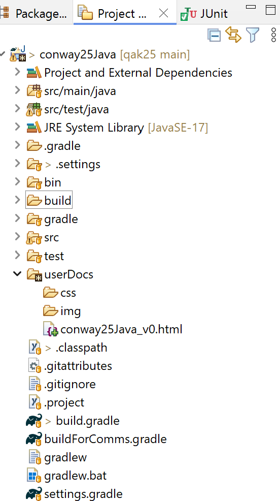

Project conway26Java¶
Costruiamo?. Si veda Processi di costruzione del software .
Seguendo quanto detto in Il nostro metodo di lavoro, consideriamo questo progetto come lo Sprint1 per la costruzione incrementale ed evolutiva di un prodotto software.
Si veda GAME OF LIFE DI CONWAY
Premessa
Si suppone di avere definito un sito GIT che contiene solo Il file README.md e di avere clonato questo sito entro una directory di lavoro (es. iss2026) sul nostro PC.
Il file README.md¶
Il file README.md di un sito GIT è molto più di un semplice file di testo: è il biglietto da visita e lo strumento di marketing delle nostre attività.
Inoltre potrebbe fornire indicazioni utili come manuale d’uso delle applicazioni.
Il file deve essere scritto usando il Linguaggio Markdown.
# issLab2026
Laboratorio di <b>Ingegneria dei Sistemi Software</b> a.a. 2025/2026 di Cognome Nome Matricola
[Testo di riferimento:](https://anatali.github.io/issLab2026/_static/docs/Protobook.pdf)
<!-- comment: [ancora personalizzata] -->
<h2 id="ParteA">Parte A: Dai programmi ai Sistemi a Microservizi</h2>
### Sistema ConwayLife in locale
[Riferimento: conway26Java Dai requisiti al deployment](https://anatali.github.io/issLab2026/Project%20conway26Java.html#conway26java-dai-requisiti-al-deployment)
* [ConwayLife Sprint1](ConwayLife/Sprint1/conway26Java): impostazione di un primo prototipo
in Java con dispositivi Mock di I/O. <i>Distribuzione</i>: file jar.
* [ConwayLife Sprint2](ConwayLife/Sprint2/conway26Java): <b>evoluzione</b> del primo prototipo
con un dispositivo di output realizzato in Swing. <i>Distribuzione</i>: file jar
### Sistemi come servizi
* ...
### Sistema ConwayLife con pagine HTML
* [ConwayLife Sprint3(ConwayLife/Sprint3/conway26Java): evoluzione del sistema in locale
usando una pagina HTML come dispositivo di I/O. <i>Distribuzione</i>: Docker yaml.
Creiamo il progetto e impostiamo in Eclipse
.  |
Inizializzazione
|
Esecuzione del prodotto |
|
Settaggio filtri per redere visibili resources e Gradle build folder
Parte applicativa:
leggiamo Il gioco come caso di studio
aggiungiamo e al suo interno:
il file di nome
conway26Java_v0.htmlricavato da template che ha il ruolo di un diario di bordo (con varie versioni)la subdirectory
userDocs/cssper gli stili usati dal diariola subdirectory
userDocs/imgper le immagini usate dal diarioriportiamo nel file
conway26Java_v0.htmli dati del progettista e scriviamo le sezioni Requirement analysis e Problem analysis con le opportune motivazionipensiamo alle procedure di testing funzionale (si veda procedure di testing funzionale) e scriviamo la sezione Test plans
impostiamo il progetto e scriviamo la sezione Project (prima di scrivere il codice)
Parte applicativa:
aggiungiamo (se non esiste) come sourcefolder: src/main/java e le altre directory specificate in build.gradle
aggiungiamo il
package conwayprocediamo con la produzione del codice
aggiungiamo procedure di testing
build.gradle e Main di conway26Java¶
plugins {
id 'application'
id 'java'
id 'eclipse'
}
version '1.0'
java {
toolchain.languageVersion.set(JavaLanguageVersion.of(17))
}
repositories {
mavenCentral()
flatDir { dirs '../unibolibs' }
}
dependencies {
/* UNIBO ******************************* */
implementation name: 'uniboInterfaces'
implementation name: '2p301'
implementation name: 'unibo.basicomm23-1.0'
}
sourceSets {
main.java.srcDirs += 'src'
main.java.srcDirs += 'src/main/java'
main.java.srcDirs += 'src/main/kotlin'
main.java.srcDirs += 'src/main/resources'
test.java.srcDirs += 'src/main/java/test' //test is specific
test.java.srcDirs += 'src/main/kotlin/test'
}
eclipse {
classpath {
sourceSets -= [sourceSets.main, sourceSets.test]
}
}
application {
//Define the main class for the application.
mainClassName = 'conway26Java.HelloWorld'
}
jar {
println("building jar")
from sourceSets.main.allSource
from('./') {
include '*.pl'
include '*.json'
}
manifest {
attributes 'Main-Class': "$mainClassName"
}
}
task dovesiamo {
println("projectDir= $projectDir")
println("buildDir = $buildDir")
}
|
In questa versione vi sono dipendenze solo relative alla libreria JUnit per fare testing. unibolibs contiene le librerie
|
conway26Java Dai requisiti al deployment¶
Il nostro metodo di lavoro impone che si debba partire dai requisiti, che il committente ha specificato come segue:
conway26Java-Requirements¶
Realizzare una versione in Java del gioco Life di Conway, come gioco zero-player. Il gioco consiste nell’introdurre una Griglia di Celle il cui stato (cella ‘viva’ o cella ‘morta’) evolve come stabilito dallle regole di ConwayLife
L’utente umano deve poter:
specificare la configurazione iniziale della griglia del gioco
vedere l’evoluzione del gioco in forma opportuna (si veda Problema della vista del gioco)
fermare e far ripartire l’evoluzione del gioco
pulire (a gioco fermo) la configurazione della griglia del gioco
Il passo successivo è impostare l’analisi del problema e delineare una architettura logica del sistema.
conway26Java Analisi del problema¶
Una prima analisi del problema si può trovare in Analsi del problema GofLife, mentre un primo schema organizzativo del sistema da realizzare si trova in Progetto ConwayLife26
Lo schema rappresenta un modello del sistema, espresso utilizzando notazioni grafiche in stile UML. Lo riportiamo qui sotto, come prodotto della analisi del problema, prima ancora che di progetto.
Infatti:
I requisiti menzionano una Griglia di Celle. Questi termini sono formalizzati nelle classi Grid e Cell ritenendo adeguato che questi enti siano realizzati in software come POJO.
Le regole di Conway sono il ‘core business’ applicativo e fanno riferimento a Grid. La specifica di queste regole è affidata a un altro POJO, istanza di una classe Life.
Il gico è zero-player, ma deve essere controllato dall’utente attraverso dispostivi di I/O. Come analisti, non riteniamo che questo compito sia responsabilità di nessuna delle classi precedenti, per cui si ritiene necessario introdurre un nuovo POJO, di classe LifeController
I dispositivi di I/O potrebbero essere i più diversi. Occorre rendere LifeController indipendente dai dettagli tecnologici dell’I/O definiìendo opportuni contratti (formalizzati come interface Java) che i dispostivi dovrenno rispettare.
conway26Java-ArchitetturaLogica¶

{kind=link}
{kind=link}
Questo è statto definito in fase di analisi del problema per delineare una architettura (logica) del sistema che:
tiene conto dei Principi SOLID separando le responsabilità dei diversi componenti (espressi in stile OOP )
imposta il componente LifeController in modo tale che la parte proattiva del gioco sia indipendente dalle parti che realizzano l’input-output di interazione con l’utente umano e dai dettagli tecnologici di realizzazione dei dispositivi di I/O.
imposta il sistema software in modo molto diverso (e migliore) da come si presenta nel codice (ispirato al Paradigma Funzionale ) ConwayLife.py proposto dalla AI, come detto nel preludio
Perchè migliore?
esprime in modo esplicito (con opportune classi Java) i concetti-base del dominio applicativo (Grid e Cell) stabilto nel testo dei requisiti
l’entità Cell non viene ‘ridotta’ a un array di interi o booleani
introduce una entità (Life) che ha come sola responsabilità le regole del gioco, seprandola da una diversa entità (LifeController) responsabile della interazione cone l’utente (che nella versione Python viene espressa nel main !!)
prevede la possibilità di configurare il sistema con diversi dispositivi di I/O, lasciando inalterato il codice realativo al controllo del gioco, come anticipato in MainConwayLifeJava.java
ammette la possibilità che LifeController possa interrompere e riavviare la esecuzione del gioco, cosa che la versione Python non fa
permette di definire un primo insieme di test funzionali concentrati sulla classe Life, che definisce il ‘motore logico’ del gioco.
conway26Java Piani di Testing funzionale¶
La introduzione di un Piano di test funzionale fin dalle fasi di analisi, è fondamentale per guidare la fase di realizzazione del codice. Ma sorge un problema:
come si fa a definire un piano di test funzionale se non si è ancora scritto una riga di codice?
La risposta consiste nel basarsi sul cosa (WHAT) il sistema dovrà fare e non sul come (HOW) verrà realizzato il sistema software.
Prendiamo ad esempio la classe Life che definisce il motore logico del gioco. Dalla specifica del gioco, possiamo dedurre che questa classe dovrà sostenere almeno a un insieme di funzionalità esprimibile in modo formale mediante una sinterface Java:
public interface LifeInterface {
/** Restituisce il numero di righe e colonne della griglia*/
int getRows();
int getCols();
/** Imposta lo stato di una cella */
void setCell(int x, int y, boolean alive);
/** Restituisce lo stato di una cella specifica */
boolean isAlive(int x, int y);
/** Calcola l'evoluzione dello stato alla generazione successiva */
void nextGeneration();
/** Pulisce la griglia (nessuna cella viva) */
void clear();
/** Restituisce una rappresentazione grafica testuale della grglia*/
public String gridRep( );
}
A questo punto, possiamo definire un piano di test funzionale per il sistema, basandoci sui requisiti del gioco e sulla logica del gioco stesso. Ad esempio:
conway26Java-Impostazione Testing¶
public class ConwayLifeTest {
@Before
public void setup() {
System.out.println("setup"); }
@After
public void down() {
System.out.println("down");
}
conway26Java-testOscilla¶
@Test
public void testOscilla() {
System.out.println("testOscilla ---------" );
LifeInterface liferules = new Life(5, 5);
// Configurazione orizzontale
liferules.setCell(2, 1, true);
liferules.setCell(2, 2, true);
liferules.setCell(2, 3, true);
System.out.println("testOscilla | Stato Iniziale:\n" + liferules.gridRep());
liferules.nextGeneration();
System.out.println("testOscilla | after 1 gen:\n" + liferules.gridRep());
// Verifica che sia diventato verticale
assertTrue(liferules.isAlive(1, 2));
assertTrue(liferules.isAlive(2, 2));
assertTrue(liferules.isAlive(3, 2));
assertFalse(liferules.isAlive(2, 1));
liferules.nextGeneration();
System.out.println("testOscilla | after 2 gen :\n" + liferules.gridRep());
// Verifica che sia tornato orizzontale (Periodo 2)
assertTrue(liferules.isAlive(2, 1));
assertTrue(liferules.isAlive(2, 2));
assertTrue(liferules.isAlive(2, 3));
}
conway26Java-testOscillaFromFile¶
Un test potrebbe anche essere impostato in modo Data-Driven, leggendo la configurazione iniziale da un file.
@Test
public void testOscillaFromFile() throws Exception {
// Carico un Blinker (periodo 2)
boolean[][] initial = PatternLoader.loadFromResource("src/test/resources/blinker.txt", 5, 5);
Life liferules = new Life(initial);
System.out.println( liferules.formatGrid() );
System.out.println( "__________________________________________" );
liferules.nextGeneration(); // Generazione 1 (cambia stato)
System.out.println( liferules.formatGrid() );
System.out.println( "__________________________________________" );
liferules.nextGeneration(); // Generazione 2 (deve tornare all'originale)
System.out.println( liferules.formatGrid() );
System.out.println( "__________________________________________" );
assertArrayEquals("L'oscillatore deve tornare allo stato iniziale dopo 2 passi",
initial, liferules.getGrid());
}
conway26Java-Costruttori¶
Scrivere un TestPlan prima che la classe Life esista potrebbe indurre a decidere subito:
“Come passo la (specifica della) griglia? Con una matrice di booleani? Con un array di oggetti Cell? Come leggo il risultato?”.
Tuttavia ci sono modi per ‘differire’ queste scelte.
La procedura di testing conway26Java-testOscillaFromFile passa al costruttore di Life
una griglia preconfigurata di nome initial. Se il costruttore di Life
scrive this.grid=initial, si copia un riferimento. Ciò può essere
pericoloso, perchè una modifica (dall’esterno di Life) di initial modifica anche l’interno della classe.
Per evitare problemi, è opportuno fare una deep copy dell’array:
//Da Java8 in avanti
private boolean[][] deepCopyJava(boolean[][] original) {
return Arrays.stream(original)
.map(boolean[]::clone)
.toArray(boolean[][]::new);
}
Come Gemini spiega il codice
Arrays.stream(original): Prende la matrice (che è un “array di array”) e la trasforma in un flusso di dati (Stream). Ogni elemento di questo stream è una singola riga (boolean[])..map(boolean[]::clone): Per ogni riga che passa nello stream, viene chiamato il metodoclone().L’operatore
::(Method Reference) dice a Java: “Prendi ogni riga e fanne una copia indipendente”.Questo assicura che le righe della nuova matrice siano fisicamente diverse da quelle della vecchia.
.toArray(boolean[][]::new): Infine, raccoglie tutte queste nuove righe clonate e le impacchetta in una nuova matrice bidimensionale (boolean[][]).
conway26Java-Progettazione&realizzazione¶
La conway26Java-ArchitetturaLogica, Life definisce la griglia
come un oggetto di classe Grid che contiene al suo interno una array (Cell[][] gridrep)
di Cell che danno ‘consistenza ontologica’ alle celle, non più ‘ridotte’ ad array di
booolean o di integer.
La procedura di testing conway26Java-testOscilla è più aderente a questa impostazione in quanto passa al costruttore di Life il numero di righe e colonne, lasciando alla classe la responsabilità (e l’opportunità) di definire la griglia come crede.
Si potrebbe anche pensare (con riferimento ai design patterns) di introdurre un Factory method in cui le dimensioni della griglia possono essere:
stabilite di default
lette da un file di configurazione
passate come parametri al metodo
conway26Java-Coding¶
Il passaggio dal modello al codice richiede che quanto definito dall’analista sia ben compreso dal progettista e che questi lo traduca in codice in modo confacente alla specifica.
Anche in questa fase, la AI può aiutare: si veda conway26Java-Chiesto a Gemini. In pratica, utilizziamo la AI come un ‘generatore di codice’ guidato dal nostro modello di sistema e non semplicemente da quanto la AI trova in rete.
Un prompt per Gemini
La figura allegata vuole definire l’architettura logica di un sistema software che realizza il gioco Life di Conway. Vorrei che tu ricavassi i concetti importanti che si possono desumere da questo daigramma (in stile UML)
Uno schema per partire¶
Per agevolare questa transizione, è disponibile un workspace di riferimento nella cartella ConwayLifeProject (in ConwayLifeSprint1). Si noti che:
sono definiti due package (
domainedevices) per non mescolare il codice relativo al dominio e il codice relativo ai dispositivi di I/O.le interfacce
IOutDev.javaeGameController.javasono definite nel package domain per ribadire che sono i dispositivi che dovranno adattarsi alle esigenze del dominioe non viceversa
conway26Java-TestReports¶
Una volta definito il codice, le specifiche di testing possono essere eseguite come
Run As Junit Test oppore attivando gradle:
gradlew teste aprire il filebuild\reports\tests\test\index.htmlper vedere il risultato del test
conway26Java-JavaCodeCoverage¶
Aggingiamo nel file build.gradle il plugin JaCoCo e la configurazione del task jacocoTestReport:
jacocoTestReport {
dependsOn test // Il report viene generato solo dopo l'esecuzione dei test
reports {
xml.required = false
csv.required = false
html.outputLocation = layout.buildDirectory.dir('reports/jacoco')
}
}
Ora possiamo generare report che mostrano quali righe di codice sono state “visitate” dai test JUnit:
gradlew test jacocoTestReporte aprire il filebuild\reports\jacoco\index.htmlper vedere il risultato del test
jacoco-sessions.html
Questo file è uno strumento di diagnostica che dice “quando” e “come” è avvenuta la raccolta dei dati. Serve a confermare che il “motore” di JaCoCo stia effettivamente analizzando i file .class giusti nel momento in cui JUnit esegue i test.
conway26Java-Esecuzione¶
In build.gradle definiamo
mainClassName='conway26Java.MainConwayLifeJava'gradlew runper eseguire il sistema
conway26Java-Deployment¶
Al monento ci limitiamo a generare un file jar:
Il file .jar
Un file .jar (Java ARchive) è un formato compresso basato su ZIP utilizzato per raggruppare classi Java, risorse (immagini, suoni) e metadati in un unico file per una facile distribuzione ed esecuzione. Richiede Java Runtime Environment (JRE) installato per funzionare e spesso contiene un file “manifest” per definire la classe principale eseguibile.
gradlew jarper generare il file jar eseguibileconway26Java-1.0.jarnella directorybuild\libsjava -jar conway26Java-1.0.jarper eseguire l’applicazione (inbuild\libs)